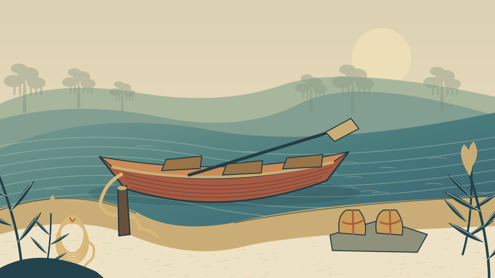

渡舟 · 浅色绳 · 木桩
岸边系绳
舟绳与河岸劳动的事件意象
事件插图 可收起，正文保持完整

插图未显示，事件名称与下方文字仍完整。一条小渡舟停在浅滩，松开的绳结让船头不断撞岸。渡工一边扶船，一边向你招手。他把两包干粮放在石上，想请你帮忙。
他指向上游：中间的浅湾没有鳄巢，那里还有备用补给；左侧芦丛却常有鳄兽出没。
你准备怎么做？
以下只示意选项排版，不执行行动。
- 重新系稳舟绳行动占位 · 不执行检定
- 观察船头水势行动占位 · 不执行检定
- 告辞，继续上路行动占位 · 不推进路线
尚未提交行动。本稿不展示成功结果、不发奖励，也不写事件完成。
展开长文阅读示例（版式说明，非剧情）
背景板只用来说明“这里是一片河岸”。细节落在边缘，中间留出素底。即使滚动到一段很长的文字，水纹、芦叶和人物都不应穿过字行；正文使用不透明的阅读底色，而不是靠阴影或细边勉强压住图片。
地点、身份与行动各有自己的文字信息。关闭图片后，事件名称、人物职能、正文和选项仍在；图片没有藏着必须点中的出口，也不代替规则说明。插图作为事件开头的记忆锚点，而不是每次重绘都强行打断阅读的弹窗。
桌面上的人物、身份、路图和背包可以留在两侧。窄屏不需要另一套功能：同一个面板移到弹窗，关闭后回到原来的阅读位置。先有稳定的内容结构，再做画面修饰，不让装饰决定业务规则。
本稿中的页面切换是查看两份独立样稿，不是从一个事件前往另一个事件。这里没有存档、掷骰、战斗、真实库存、领奖或返程。示意面板与正式游戏之间的接线、恢复和验收需要另有实施范围。